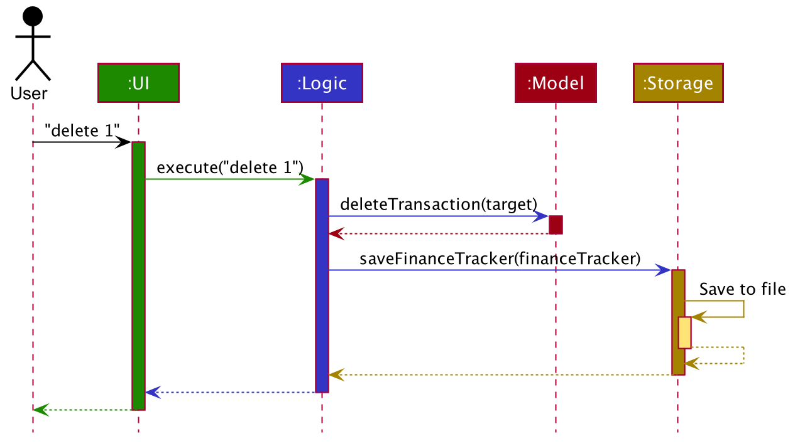

Developer Guide
- Design
- Implementation
- Appendix A: Product scope
- Appendix B: User stories
- Appendix C: Use cases
- Appendix D: Non-Functional Requirements
- Appendix E: Glossary
- Appendix F: Instructions for manual testing
Design
Architecture

The Architecture Diagram given above explains the high-level design of the App. Given below is a quick overview of each component.
Main has two classes called Main and MainApp. It is responsible for:
- on app launch - initializing the components in the correct sequence, and connecting them to each other.
- on shut down - shutting down the components and invoking cleanup methods where necessary.
Commons represents a collection of classes used by multiple other components.
The rest of the App consists of four components.
-
UI: The App’s User Interface. -
Logic: The command executor. -
Model: Holds the data of the App in memory. -
Storage: Reads data from, and writes data to, the hard disk.
Each of the four components:
- defines its API in an
interfacewith the same name as the component. - exposes its functionality using a concrete
{Component Name}Managerclass (which implements the corresponding APIinterfacementioned in the previous point.
For example, the Logic component (see the class diagram given below) defines its API in the Logic.java interface and exposes its functionality using the LogicManager.java class which implements the Logic interface.

How the architecture components interact with each other
The sequence diagram below shows how the components interact with each other for the scenario where the user issues the command delete 1.

The sections below give more details of each component.
UI component

API :
Ui.java
The UI consists of a MainWindow that is made up of parts e.g.CommandBox, ResultDisplay, TransactionListPanel, OverviewTabPane etc.
All of these, including MainWindow, inherit from the abstract UiPart class.
There are 5 tab panes which are contained within MainWindow:
-
OverviewTabPane- Displays an overview of the most recent transactions (both incomes and expenses) along with the savings goals.- Contains
TransactionListPanelandSavingsGoalPanel.
- Contains
-
IncomeTabPane- Displays a list of incomes along with bookmark incomes.- Contains
IncomePanelandBookmarkIncomePanel.
- Contains
-
ExpenseTabPane- Displays a list of expenses along with bookmark expenses.- Contains
ExpensePanelandBookmarkExpensePanel.
- Contains
-
AnalyticsTabPane- Displays statistics. -
UserGuideTabPane- Displays the user guide.
The UI component uses the JavaFx UI framework. The layout of these UI parts is defined in matching .fxml files that are in the src/main/resources/view folder.
For example, the layout of MainWindow is specified in MainWindow.fxml.
The UI component:
- executes user commands using the
Logiccomponent. - listens for changes to
Modeldata so that the UI can be updated with the modified data.
Logic component
API :
Logic.java
-
Logicuses theFinanceTrackerParserclass to parse the user command. - This results in a
Commandobject which is executed byLogicManager. - The command execution can affect
Model(e.g. adding a transaction). - The result of the command execution is encapsulated as a
CommandResultobject which is passed back toUi. - In addition, the
CommandResultobject can also instructUito perform certain actions, such as displaying the help message to the user.
Below is the sequence diagram for interactions within the Logic component for the execute("delete 1") API call.

DeleteCommandParser should end at the destroy marker (X) but due to a limitation of PlantUML, the lifeline reaches the end of diagram.
Model component

API : Model.java
The Model:
- stores a
UserPrefobject that represents the user’s preferences. - stores a
CommandHistoryobject that keeps track of the 50 most recent commands entered. - stores the finance tracker data in the following components:
- a
TransactionListcontainingTransactions. - a
BookmarkExpenseListandBookmarkIncomeList, each containingBookmarkTransactions. - a
MonthlyBudget.
- a
- exposes
MonthlyBudget, which can be ‘observed’ e.g. the UI can be bound to the values in the class so that the UI automatically updates when the values in the class changes. - exposes an unmodifiable
ObservableList<Transaction>,ObservableList<Expense>,ObservableList<Income>,ObservableList<BookmarkExpense>andObservableList<BookmarkIncome>each, which can be ‘observed’ e.g. the UI can be bound to these lists so that the UI automatically updates when the data in the lists change. - does not depend on any of the other three components (
UI,Logic,Storage).
A Transaction:
- represents a unit of user data of transactions within the finance tracker.
- is either an
Expenseor anIncome. - is composed of a
Title, anAmount, aDate, and any number ofCategorys. These are known as data fields.
A BookmarkTransaction:
- represents a unit of user data of bookmark transactions within the finance tracker.
- is either a
BookmarkExpenseor aBookmarkIncome. - is composed of a
Title, anAmount, and any number ofCategorys.
The data fields Title, Amount, Date, and Category are encapsulations of an underlying Java data type.
| Data Field | Underlying Java Data Type |
|---|---|
Title |
java.lang.String |
Amount |
java.math.BigDecimal |
Date |
java.time.LocalDate |
Category |
java.lang.String |
The underlying Java data types allow more operations to be done on Transaction objects, such as filtering Transactions by Date, or aggregating the Amounts of Expenses and Incomes.
String in their constructor, regardless of the underlying Java data type.
Within the constructor, data validation takes place to ensure that the String correctly represents a valid data field.
If the String given is not valid, an IllegalArgumentException will be thrown.
Otherwise, the String is parsed into the underlying Java data type.The reason for this is that when a data field object needs to be created, it is generally from a
String
(such as when a user command parsed from the Logic component, or when a transaction is loaded from the Storage component).
This abstraction is maintained so that the implementation of other components (Logic and Storage) is independent of
the underlying Java data type choices in the Model component.
The FinanceTracker has the following fields:
- a
TransactionListfield which stores allExpenseandIncomeobjects together. - a
BookmarkExpenseListfield which stores allBookmarkExpenseobjects. - a
BookmarkIncomeListfield which stores allBookmarkIncomeobjects. - a
MonthlyBudgetfield which stores the user’s set monthly expense limit and monthly savings goal, as well as all calculated values for the user’s statistics.
The ModelManager has the following fields:
- three
FilteredListfields which point to the sameObservableListobtained fromFinanceTracker::getTransactionList. ThePredicatefields in the threeFilteredListfields are set such that:-
filteredTransactionsshows a view of allTransactionobjects. -
filteredExpensesshows a view of allTransactionobjects of typeExpense. -
filteredIncomesshows a view of allTransactionobjects of typeIncome.
The motivation behind having three lists is due to the fact that there are three tabs in the user interface which display transactions, each having its own list while at the same time retrieving data from the same transaction list.
-
- two
ObservableListfields,castFilteredExpensesandcastFilteredIncomesthat contain the same objects as that infilteredExpensesandfilteredIncomesrespectively. This is so that the UI can automatically update when the values in the two lists change. - two
FilteredListfields,FilteredBookmarkExpensesandFilteredBookmarkIncomesthat point to theObservableLists obtained fromFinanceTracker::getBookmarkExpenseListandFinanceTracker::getBookmarkIncomeListrespectively. - a
MonthlyBudgetfield which is the same as theMonthlyBudgetstored inFinanceTracker.
Storage component

API : Storage.java
The Storage component:
- can save
UserPrefobjects inJSONformat and read it back. - can save the finance tracker data in
JSONformat and read it back.
JsonAdaptedExpense and JsonAdaptedIncome are JSON-friendly adaptations of Expense and Income respectively.
However, unlike Expense and Income, all the fields in JsonAdaptedExpense and JsonAdaptedIncome are String objects.
This is so that the fields are compatible with the JSON format.
JsonSerializableFinanceTracker contains two List fields, one containing all JsonAdaptedExpense objects and the other containing all JsonAdaptedIncome objects.
Despite the similarities between Expense and Income, and despite the fact that objects of both types are put into the same list in FinanceTracker,
the motivation behind keeping them separately is to ensure that they are separately listed in the JSON data file.
Common classes
Classes used by multiple components are in the ay2021s1_cs2103_w16_3.finesse.commons package.
Implementation
This section describes some noteworthy details on how certain features are implemented.
Tabs
Programmatically switch selected tab
Overview
Fine$$e supports the ability to switch tabs programmatically. The following is a list of commands that utilise this ability:
-
help- Opens the user guide. -
tab- Switches to the tab corresponding to the index entered by the user. -
add-expense- Adds an expense to the finance tracker and switches to the Expenses tab. -
ls-expense- Shows a list of all expenses in the finance tracker by switching to the Expenses tab. -
add-income- Adds an income to the finance tracker and switches to the Incomes tab. -
ls-income- Shows a list of all incomes in the finance tracker by switching to the Incomes tab. -
add-bookmark-expense- Adds a bookmark expense to the finance tracker and switches to the Expenses tab. -
add-bookmark-income- Adds a bookmark income to the finance tracker and switches to the Incomes tab.
Implementation of feature
The ability to programmatically update the selected tab is implemented via CommandResult.
Upon the successful execution of a command, a CommandResult is generated and passed back to MainWindow.
This CommandResult contains the necessary information which the MainWindow needs to update the user interface, such as:
- The feedback to be displayed to the user;
- Whether to exit the application; and
- Whether to programmatically switch to a different tab in the user interface.
MainWindow will then select the tab specified in CommandResult as the active tab if applicable.
Switching tabs
The following sequence diagram shows how the CommandResult is created and returned upon the execution of any command.
If the command in question is one of those listed above, the UI will switch to the specified tab.

Design considerations
The alternative implementations considered, as well as the rationale behind our current implementation are as follows:
| Alternative considered | Current implementation and rationale |
|---|---|
Add a method in MainWindow which can be called to programmatically switch tabs in the user interface upon execution of the command. |
Encapsulate the tab switching information within CommandResult to prevent tight coupling of Logic and UI components. |
Transactions
Add transactions feature
Overview
The add transactions feature allows users to add transactions into the FinanceTracker.
Each new transaction must have the data fields Title, Amount, Date, and Category.
Below is the class diagram of the components involved in the add transactions feature.

Implementation of feature
The add transactions feature is implemented via AddExpenseCommand and AddIncomeCommand, which are created from AddExpenseCommandParser and AddIncomeCommandParser respectively.
-
AddExpenseCommandParserandAddIncomeCommandParsertake in the argument string and parses it into anArgumentMultimapthat contains all the different data fields mapped (as strings) to their respective prefix. - The strings are then parsed to create the data fields within the Model component (dependency arrows omitted in the above diagram for simplicity).
- The parsers use the data fields to create
ExpenseorIncomeobjects, which are then used to createAddExpenseCommandorAddIncomeCommandobjects.
FinanceTrackerParser decides whether AddExpenseCommandParser or AddIncomeCommandParser is used.
- On an
add-expenseoraddecommand,AddExpenseCommandParseris used. - On an
add-incomeoraddicommand,AddIncomeCommandParseris used. - On an
addcommand:-
AddExpenseCommandParseris used if the user is currently on the Expenses tab. -
AddIncomeCommandParseris used if the user is currently on the Incomes tab. - A
ParseExceptionis thrown if the user is currently on neither of the above tabs.
-
Adding transactions
Below is the sequence diagram for interactions within the Logic and Model components when the user inputs the adde t/Bubble Tea a/5 d/03/10/2020 c/Food & Beverage command while on the Expenses tab.
Note that the arguments in the full command string have been abbreviated to ....

When AddIncomeCommandParser is used, the sequence diagram is similar, but all occurrences of Expense are replaced with Income.
The following activity diagram summarizes what happens within FinanceTrackerParser when the user executes a new add command:

Note: The diagram contains many repetitive processes. However, it cannot be simplified due to the limitations of PlantUML.
Design considerations
The alternative implementations considered, as well as the rationale behind our current implementation are as follows:
| Alternative considered | Current implementation and rationale |
|---|---|
Collapse both AddExpenseCommandParser and AddIncomeCommandParser into a single AddTransactionCommandParser whose result can then be used to create AddExpenseCommand or AddIncomeCommand. |
Keep two separate parsers AddExpenseCommandParser and AddIncomeCommandParser.Although the add command can result in either AddExpenseCommand or AddIncomeCommand, adde will always create AddExpenseCommand while addi will always create AddIncomeCommand. It is more apt to use a specific parser in the latter cases. |
Implement either add or adde + addi but not both. This reduces the amount of development work needed. |
Both options are implemented to provide the user with a choice for whichever command they feel is most convenient. add can be used to add to the currently active tab, while adde and addi can be used on any tab. |
Edit transactions feature
Overview
The edit transactions feature allows users to edit existing transactions in the FinanceTracker.
At least one of the data fields Title, Amount, Date, and Category must be modified.
Below is the class diagram of the components involved in the edit transactions feature.

Implementation of feature
The edit transactions feature is implemented via EditCommandParser, which returns an EditCommand that is then used to create EditExpenseCommand or EditIncomeCommand.
-
EditCommandParsertakes in the argument string and parses it into anArgumentMultimapthat contains all the different data fields mapped (as strings) to their respective prefix. - The index is parsed into an
Index, which is used to locate the transaction to be modified during command execution. - The remaining strings are then parsed to create the data fields within the Model component (dependency arrows omitted in the above diagram for simplicity).
- The data fields are used to create an
EditTransactionDescriptordescribing all of the new data fields. - The
Indexis combined with theEditTransactionDescriptorto return anEditCommand.
FinanceTrackerParser decides whether EditExpenseCommand or EditIncomeCommand is created from the resulting EditCommand.
-
EditExpenseCommandis used if the user is currently on the Expenses tab. -
EditIncomeCommandis used if the user is currently on the Incomes tab.
Editing transactions
Below is the sequence diagram for interactions within the Logic and Model components when the user inputs the edit 1 a/5 command while on the Expenses tab.
It is split into two diagrams, one for parsing and one for execution.


When EditExpenseCommand is used, the sequence diagram is similar, but all occurrences of Expense are replaced with Income.
The following activity diagram summarizes what happens within FinanceTrackerParser when the user executes a new edit command:

Delete transactions feature
Overview
The delete transactions feature allows users to remove transactions from the FinanceTracker.
Below is the class diagram of the components involved in the delete transactions feature.

Implementation of feature
The edit transactions feature is implemented via DeleteCommandParser, which returns an DeleteCommand that is then used to create DeleteExpenseCommand or DeleteIncomeCommand.
-
DeleteCommandParsertake in the argument string and parses the index into anIndex, which is used to locate the transaction to be deleted during command execution. - The
Indexis used to return aDeleteCommand.
FinanceTrackerParser decides whether DeleteExpenseCommand or DeleteIncomeCommand is created from the resulting DeleteCommand.
-
DeleteExpenseCommandis used if the user is currently on the Expenses tab. -
DeleteIncomeCommandis used if the user is currently on the Incomes tab.
Deleting transactions
Below is the sequence diagram for interactions within the Logic and Model components when the user inputs the delete 1 command while on the Expenses tab.
When DeleteExpenseCommand is used, the sequence diagram is similar, but all occurrences of Expense are replaced with Income.
The following activity diagram summarizes what happens within FinanceTrackerParser when the user executes a new delete command:

Find transactions feature
Overview
The find transactions feature allows users to search for transactions in the FinanceTracker by various search parameters.
Each search parameter corresponds to a different predicate which will be used to filter transactions in the various FilteredLists.
Below is the class diagram of the components involved in the find transactions feature.

Implementation of feature
The find transactions feature is implemented via FindCommandParser, as well as the following commands:
-
FindCommand, the base command that is returned when the command is parsed. -
FindTransactionCommand, to be executed when the user inputs the command on the Overview tab. -
FindExpenseCommand, to be executed when the user inputs the command on the Expenses tab. -
FindIncomeCommand, to be executed when the user inputs the command on the Incomes tab.
FindCommandParser takes in the argument string and parses it into an ArgumentMultimap that contains all the different search parameters mapped to their respective prefix.
Depending on the parameters present, FindCommandParser then creates a List<Predicate<Transaction>> containing the predicates that will be used to filter the transactions.
It then returns a FindCommand containing the list of predicates.
Depending on the UI tab the user inputted the command in, a FindXYZCommand (FindTransactionCommand, FindExpenseCommand or FindIncomeCommand) will be created from the base FindCommand.
When executed, the FindXYZCommand will combine all of the predicates in the list into a combinedPredicate, then sets the predicate of the respective FilteredList in ModelManager so that only the transactions matching the combinedPredicate will be displayed in the UI.
The list of predicates that can be used to filter the FilteredLists are as follows:
-
TitleContainsKeyphrasesPredicatechecks if any of the given keyphrases is present in the transaction’s title. -
HasExactAmountPredicatechecks if the transaction’s amount is equal to the given amount. -
OnExactDatePredicatechecks if the transaction’s date is equal to the given date. -
HasCategoriesPredicatechecks if the transaction’s categories contains any of the given categories. -
InAmountRangePredicatechecks if the transaction’s amount is within the given amount range. -
InDateRangePredicatechecks if the transaction’s date is within the given date range.
Finding transactions
Below is the sequence diagram for interactions within the Logic and Model components when the user inputs the "find t/tea a/5" command while on the Overview tab.

The following activity diagram summarizes what happens when the user executes a new find command:

Design considerations
The alternative implementations considered, as well as the rationale behind our current implementation are as follows:
| Alternative considered | Current implementation and rationale |
|---|---|
Having separate command parsers for each tab in which the find command can be input, e.g. FindTransactionCommandParser, FindExpenseCommandParser and FindIncomeCommandParser, which return a FindTransactionCommand, a FindExpenseCommand and a FindIncomeCommand respectively. |
Use only one FindCommandParser, which returns a FindCommand that is then further split into the respective FindXYZCommand. This is because the parsing for the input is similar same regardless of the tab the user is on. |
Have FindCommandParser take in an Index corresponding to the parameter being searched. |
Make the input of similar format to that of adding transactions, so that the input can be parsed into an ArgumentMultimap which is then used generate the relevant Predicates. This is so that multiple search parameters can be employed in one command. |
Budgeting
Overview
The budgeting feature allows users to track their remaining budget and current savings based on their set monthly expense limit and monthly savings goal.
The user sets the monthly expense limit and monthly savings goal, and the remaining budget and current savings will automatically be calculated based on the transactions in the FinanceTracker.
The class diagram below depicts the components involved in the budget feature.

Implementation of feature
The budgeting feature is implemented via MonthlyBudget, which contains the following fields:
- Two
ObjectProperty<Amount>fields formonthlyExpenseLimitandmonthlySavingsGoal. - Two
ObjectProperty<CalculatedAmount>fields forremainingBudgetandcurrentSavings. - Three
ObservableList<CalculatedAmount>fields formonthlyExpenses,monthlyIncomesandmonthlySavings, which are used for the Analytics feature. - An
ObservableList<String>ofmonths, to determine which elements in theObservableList<CalculatedAmount>corresponds to which month.
CalculatedAmount differs from Amount in that a CalculatedAmount can be negative, and supports addition and subtraction.
The method that is integral to the MonthlyBudget is the calculateBudgetInfo method.
It takes in the current TransactionList in the FinanceTracker and an integer numOfMonths, and recalculates all CalculatedAmounts in the MonthlyBudget as follows:
- Sum the amounts of all
Expenses in theTransactionListdated in the current month, subtracts it frommonthlyExpenseLimit, and sets it as theremainingBudget. - Sums the amounts of all
Expenses in theTransactionListdated in the current month, subtracts it from the sum of allIncomes dated in the current month, and sets it as thecurrentSavings. - For the past number of months indicated by
numOfMonths(including the current month), calculate the total expenses, total incomes and total savings for each month and add them to the correspondingObservableList<CalculatedAmount>.
The commands that trigger a call of calculateBudgetInfo are as follows:
-
AddExpenseCommand,AddIncomeCommand,DeleteExpenseCommandandDeleteIncomeCommand, which change the total expenses/incomes of theTransactions in theTransactionList. -
EditExpenseCommandandEditIncomeCommand, if theAmountis edited. -
SetExpenseLimitCommand, which changes theAmountinmonthlyExpenseLimit. -
SetSavingsGoalCommand, which changes theAmountinmonthlySavingsGoal.
calculateBudgetInfo is also called by Storage whenever the finance tracker data is loaded upon startup.
Set monthly spending limit
SetExpenseLimitCommand and SetSavingsGoalCommand work in similar ways.
Below is the sequence diagram for interactions within the Logic and Model components when the user inputs the "setel a/500" command.

The following activity diagram summarizes what happens when the user executes any command that changes the calculated values in MonthlyBudget (e.g. setting expense limit):

Design considerations
The alternative implementations considered, as well as the rationale behind our current implementation are as follows:
| Alternative considered | Current implementation and rationale |
|---|---|
Use the Amount class for calculated amounts. |
Use a separate class CalculatedAmount for calculated amounts, so as to avoid breaking abstraction and support negative values. |
Bookmark transaction
A bookmark transaction is a template that allows users to create transactions that they make frequently, such as paying phone bills monthly or receiving stipend for being a teaching assistant. This feature reduces the hassle of keying in information repeatedly for identical transactions that occur frequently.
A BookmarkTransaction is made up of 3 fields: Title, Amount and Category.
The class diagram below depicts the structure of the BookmarkTransaction, BookmarkExpense, BookmarkIncome, BookmarkExpenseList and BookmarkIncomeList in the Model component.

Class diagram for bookmark transaction model component
Add bookmark transactions
Overview
The add bookmark transactions feature allows users to add bookmark transactions into the FinanceTracker.
Each new bookmark transaction must have the data fields Title, Amount, and Category.
Below is the class diagram of the components involved in the add transactions feature.

Implementation of feature
The add bookmark transaction feature is implemented via AddBookmarkExpenseCommand and AddBookmarkIncomeCommand, which are created from AddBookmarkExpenseCommandParser and AddBookmarkIncomeCommandParser respectively.
-
AddBookmarkExpenseCommandParserandAddBookmarkIncomeCommandParsertake in the argument string and parses it into anArgumentMultiMapthat contains all the different data fields mapped (as strings) to their respective prefix. -
The strings are then parsed to create the data fields within the Model component (dependency arrows omitted in the above diagram for simplicity).
-
The parsers use the data fields to create
BookmarkExpenseorBookmarkIncomeobjects, which are then used to createAddBookmarkExpenseCommandorAddBookmarkIncomeCommandobjects.
The following is a detailed elaboration of how AddBookmarkExpenseCommand operates.
Step 1. After the successful parsing of user input, the AddBookmarkExpenseCommand#execute(Model model) method is executed.
Step 2. ModelManager#addBookmarkExpense(toAdd) is invoked to add the new bookmark expense.
Step 3. The new bookmark expense is added into FinanceTracker#bookmarkExpenses, via the FinanceTracker#addBookmarkExpense(BookmarkExpense bookmarkExpense).
Step 4. This will then call the BookmarkExpenseList#add(BookmarkExpense toAdd) method which will check if the title of the new bookmark expense already exists in BookmarkExpenseList#internalBookmarkExpenseList via BookmarkExpenseList#contains(BookmarkExpense toCheck) before adding it.
If the title does exist already, the DuplicateBookmarkTransactionException will be thrown otherwise the new bookmark expense will be added.
Step 5. After successfully adding the new bookmark expense, the command box will be reflected with AddBookmarkExpenseCommand#MESSAGE_SUCCESS constant and a new CommandResult will be returned with the message.

Sequence diagram for adding bookmark expenses

Reference frame for sequence diagram
Edit bookmark transaction
Overview
The edit bookmark transaction feature allows users to edit the details of a specified bookmark transaction in the FinanceTracker.
Below is the class diagram of the components involved in the edit bookmark transaction feature.

Class diagram of components involved in edit bookmark transaction feature
Implementation of feature
EditBookmarkExpenseCommandandEditBookmarkIncomeCommandwork in similar ways.
Following is a detailed elaboration of how EditBoomarkExpenseCommand operates.
This command can only be executed on the Expenses tab.
Step 1. After the successful parsing of user input, the EditBookmarkExpenseCommand#execute(Model model) method is called which checks if the Index defined as an argument when instantiating EditBookmarkCommand(Index targetIndex, EditBookmarkTransactionDescriptor editBookmarkTransactionDescriptor) is valid.
It uses EditBookmarkTransactionDescriptor to create a new edited bookmark expense.
Since it is optional for the users to input fields, the fields which are not entered will reuse the existing values that are currently stored and defined in the BookmarkExpense object.
The
Indexmust be within the bounds of the list of bookmark expenses.
Step 2. A new BookmarkExpense with the newly updated attributes will be created which replaces the existing BookmarkExpense object using Model#setBookmarkExpense(BookmarkExpense target, BookmarkExpense editedBookmarkExpense) method.
Step 3. The filtered bookmark expense list is then updated with the new BookmarkExpense with the Model#updateFilteredBookmarkExpenseList(PREDICATE_SHOW_ALL_BOOKMARK_EXPENSES) method.
Step 4. The command box will be reflected with the EditBookmarkExpenseCommand#MESSAGE_EDIT_BOOKMARK_EXPENSE_SUCCESS constant and a new CommandResult will be returned with the success message.
Delete bookmark transaction
Overview
The delete bookmark transaction feature allows users to delete a specified bookmark transaction in the FinanceTracker.
Below is the class diagram of the components involved in the delete bookmark transaction feature.

Class diagram of components involved in delete bookmark transaction feature
Implementation of feature
DeleteBookmarkExpenseCommandandDeleteBookmarkIncomeCommandwork in similar ways.
Following is a detailed elaboration of how DeleteBoomarkExpenseCommand operates.
This command can only be executed on the Expenses tab.
Step 1. After the successful parsing of user input, the DeleteBookmarkExpenseCommand#execute(Model model) method is called which checks if the Index is defined when instantiating the DeleteBookmarkCommand(Index index) constructor is valid.
The
Indexmust be within the bounds of the list of bookmark expenses.
Step 2. The BookmarkExpense at the specified Index is then removed from the BookmarkExpenseList#internalBookmarkExpenseList observable list using the Model#deleteBookmarkExpense(BookmarkExpense bookmarkExpense) method.
Step 3. The command box will be reflected with the DeleteBookmarkExpenseCommand#MESSAGE_DELETE_BOOKMARK_EXPENSE_SUCCESS constant and a new CommandResult will be returned with the success message.
The following activity diagram summarizes what happens when the user executes any command that deletes a specified bookmark expense:

Activity diagram for deleting bookmark expense
Convert bookmark transaction
Overview
The convert bookmark transaction feature converts a specified bookmark transaction into a transaction and adds it to the FinanceTracker.
Below is the class diagram of the components involved in the convert bookmark transaction feature.

Class diagram of components involved in convert bookmark transaction feature
Implementation of feature
ConvertBookmarkExpenseCommandandConvertBookmarkIncomeCommandwork in similar ways.
Following is a detailed elaboration of how ConvertBoomarkExpenseCommand operates.
This command can only be executed on the Expenses tab.
Step 1. After the successful parsing of user input, the ConvertBookmarkExpenseCommand#execute(Model model) method is called which checks if the Index is defined when instantiating the ConvertBookmarkCommand(Index index) constructor is valid.
The
Indexmust be within the bounds of the list of bookmark expenses.
Step 2. The list of bookmark expenses will then be retrieved by calling Model#getFilteredBookmarkExpenseList().
Step 3. The program will then retrieve the specified bookmark expense from the list of bookmark expenses. It will
then call BookmarkExpense#convert on the bookmark expense together with the date the user has inputted and convert
it to an Expense object.
Step 4. After converting the BookmarkExpense object to an Expense object, it will call Model#addExpense to add the
Expense object to the expense list in the finance tracker.
Step 5. The command box will be reflected with the ConvertBookmarkExpenseCommand#MESSAGE_CONVERT_BOOKMARK_EXPENSE_SUCCESS constant and a new CommandResult will be returned with the success message.

Sequence diagram for converting bookmark expense to expense

Analytics
Overview
The Analytics feature allows the user to view their spending and saving trends over a period of time. Based on the current transaction lists, the total monthly expenses, incomes and savings over the past three months are calculated and displayed in the Analytics Tab in the form of bar charts.
Implementation of feature

When the constructor for AnalyticsTabPane is called:
-
AnalyticsTabPaneconstructor takes in aMonthlyBudgetobject fromModel. - The
BarChartobjects (expenseAnalyticsBarChart,incomeAnalyticsBarChartandsavingsAnalyticsBarChart) are constructed andAxisobjects are added to them. - The method
AnalyticsTabPane#populateDatais called and takes in theMonthlyBudgetobject. The following fields fromMonthlyBudgetare accessed:-
ObservableList<CalculatedAmount>fields:monthlyExpenses,monthlyIncomesandmonthlySavings -
ObservableList<String>field:months
The method
AnalyticsTabPane#populateDataInis called for eachBarChartobject. -
- In the method
AnalyticsTabPane#populateDataIn, the values from the above fields in step 3 are accessed to constructXY.Dataobjects. - The
XY.Dataobjects are added to theBarChartobjects.
Design considerations
- An external library, Data2Viz, was considered, rather than JavaFX Charts, but the former was rejected due to difficulty in implementation.
Command history
Overview
In order to fully replicate the Command Line Interface (CLI) experience, Fine$$e features the ability to navigate through the last 50 commands entered. This is done by pressing the ↑ or ↓ arrow keys on the keyboard while focused on the command input box.
The class diagram below depicts the components involved in the command history feature.

Implementation of feature
The command history feature is implemented via CommandHistory.
Whenever the user inputs a command, the command is added to the CommandHistory so as to be tracked.
Note that for this section on the command history, all mentions of ‘command’ refer to the user input, and not the various Commands present in the codebase.
CommandHistory is backed by an EvictingStack, a data structure that works similarly to a normal Last In First Out (LIFO) stack.
However, when the EvictingStack is full, the bottom-most element of the stack is removed (or in other words, evicted).
This behaviour is achieved by maintaining a doubly-linked list made out of Nodes.
Each Node keeps track of the following information:
- Its value, which corresponds to a command in this context.
- A reference to the next
Nodein the linked list. - A reference to the previous
Nodein the linked list.
For the EvictingStack, it keeps track of not only the Node at the top of the stack, but also the Node at the bottom.
This is so that the bottom-most element can be removed in Θ(1) time.
Due to the linked list being doubly-linked, we can then also find the next bottom-most element of the EvictingStack in constant time.
In addition, CommandHistory maintains an internal navigation state that gets reset whenever a new command is entered.
This internal navigation state keeps track of the current position while traversing the command history using the ↑ and ↓ arrow keys, much like a typical CLI.
Navigating the command history
When the ↑ arrow key is pressed, there are two possible scenarios:
- The current command in the navigation state is the earliest tracked command.
- Nothing happens.
- The current command in the navigation state is not the earliest tracked command.
- The command immediately preceding the current command is retrieved.
The following activity diagram summarizes what happens when the user presses the ↑ arrow key.

Similarly, when the ↓ arrow key is pressed, there are two possible scenarios:
- The current command in the navigation state is the latest tracked command.
- The command input box is cleared.
- The current command in the navigation state is not the latest tracked command.
- The command immediately succeeding the current command is retrieved.
The following activity diagram summarizes what happens when the user presses the ↓ arrow key.

Design considerations
The alternative implementations considered, as well as the rationale behind our current implementation are as follows:
| Alternative considered | Current implementation and rationale |
|---|---|
Use Java’s in-built Stack class in CommandHistory. |
Use a custom EvictingStack instead, so as to prevent potentially running out of memory if an extremely large number of commands are entered. |
Data integrity safeguards
Overview
Since Fine$$e is an offline desktop application, it is reliant on the system time to perform date validations. This makes it vulnerable to changes in the system time while it is running. In particular, if the system time were to be changed to an earlier time, the existing data might get corrupted.
Implementation of feature
To safeguard against potential loss or corruption of data, Fine$$e tracks the system time across actions via Timekeeper, which keeps track of the last observed time.
Upon launching the application, Timekeeper is instantiated with the current system time.
Subsequently, every time a command is entered by the user, the last observed time in Timekeeper is validated against the current system time.
If the current system time is earlier than the last observed time, Fine$$e disables itself to prevent data loss.
A prompt is shown to the user to ensure that their system time is correct before restarting Fine$$e in order to continue using the application.
Upon relaunching the application, the data file is validated by JsonFinanceTrackerParser.
Should the current system time be later than or equals to the last observed time, the last observed time in Timekeeper is updated to the current system time.
Validating the time whenever a command is executed
The following sequence diagram shows what happens when a command is entered by the user.

Design considerations
The alternative implementations considered, as well as the rationale behind our current implementation are as follows:
| Alternative considered | Current implementation and rationale |
|---|---|
| Query and use the time from some remote server rather than the system time. | Keep track of the last observed system time so that there is no need for an internet connection to use the application. |
Appendix A: Product scope
Target user profile:
- Tertiary student
- Has a need to track everyday expenses/incomes
- Wishes to cultivate good saving habits
- Prefers desktop apps
- Prefers typing to mouse interactions
Value proposition: Manage finances and cultivate good financial habits (such as saving) efficiently by typing in CLI commands
Appendix B: User stories
Priorities: High (must have) - * * *, Medium (nice to have) - * *, Low (unlikely to have) - *
| Priority | As a … | I want to … | So that I can… |
|---|---|---|---|
* * * |
new user | see usage instructions | refer to instructions when I forget how to use the app |
* * * |
user | add an expense | |
* * * |
user | add an income | |
* * * |
user | view a list of past transactions | keep track of my past expenses/incomes |
* * * |
user | edit a transaction | update expenses/incomes that were entered wrongly |
* * * |
user | delete a transaction | remove expenses/incomes that were entered wrongly |
* * * |
user | group transactions by categories | keep track of my past expenses/incomes across various categories |
* * * |
user | search for transactions | easily find related expenses/incomes |
* * * |
user | bookmark expenses | easily add recurring expenses |
* * * |
user | bookmark incomes | easily add recurring incomes |
* * |
user | set a monthly spending limit | plan the maximum amount I wish to spend for the month |
* * |
user | set a monthly saving goal | work towards saving consistently and reaching my savings goals |
* * |
user | see my remaining monthly budget | track how much I have left to spend for the month |
* * |
user | set a current monthly savings | track how much I have to save to hit my savings goal |
* * |
user | view my saving trends | better plan my future expenses |
Appendix C: Use cases
(For all use cases below, the System is Fine$$e and the Actor is the user, unless specified otherwise)
Use case: UC01 - Add an expense
MSS
- User requests to add an expense.
-
Fine$$e adds the expense.
Use case ends.
Extensions
-
1a. The given data fields are invalid.
-
1a1. Fine$$e shows an error message.
Use case ends.
-
Use case: UC02 - Edit an expense
MSS
- User requests to list expenses.
- Fine$$e shows a list of expenses.
- User requests to edit a specific expense.
-
Fine$$e edits the expense.
Use case ends.
Extensions
-
2a. The list is empty.
Use case ends.
-
3a. The given index is invalid.
-
3a1. Fine$$e shows an error message.
Use case resumes at step 2.
-
-
3b. No data fields are specified.
-
3b1. Fine$$e shows an error message.
Use case resumes at step 2.
-
-
3c. The given data fields are invalid.
-
3c1. Fine$$e shows an error message.
Use case resumes at step 2.
-
Use case: UC03 - Delete an expense
MSS
- User requests to list expenses.
- Fine$$e shows a list of expenses.
- User requests to delete a specific expense.
-
Fine$$e deletes the expense.
Use case ends.
Extensions
-
2a. The list is empty.
Use case ends.
-
3a. The given index is invalid.
-
3a1. Fine$$e shows an error message.
Use case resumes at step 2.
-
Use case: UC04 - Add an income
MSS
- User requests to add an income
-
Fine$$e adds the income
Use case ends.
Extensions
-
1a. The given data fields are invalid.
-
1a1. Fine$$e shows an error message.
Use case ends.
-
Use case: UC05 - Edit an income
MSS
- User requests to list incomes.
- Fine$$e shows a list of incomes.
- User requests to edit a specific income.
-
Fine$$e edits the income.
Use case ends.
Extensions
-
2a. The list is empty.
Use case ends.
-
3a. The given index is invalid.
-
3a1. Fine$$e shows an error message.
Use case resumes at step 2.
-
-
3b. No data fields are specified.
-
3b1. Fine$$e shows an error message.
Use case resumes at step 2.
-
-
3c. The given data fields are invalid.
-
3c1. Fine$$e shows an error message.
Use case resumes at step 2.
-
Use case: UC06 - Delete an income
MSS
- User requests to list incomes.
- Fine$$e shows a list of incomes.
- User requests to delete a specific income.
-
Fine$$e deletes the income.
Use case ends.
Extensions
-
2a. The list is empty.
Use case ends.
-
3a. The given index is invalid.
-
3a1. Fine$$e shows an error message.
Use case resumes at step 2.
-
Use case: UC07 - Set the expense limit
MSS
- User requests to set the expense limit to a specific amount.
- Fine$$e sets the expense limit.
-
Fine$$e recalculates budget information.
Use case ends.
Extensions
-
2a. The given data field is invalid.
-
2a1. Fine$$e shows an error message.
Use case ends.
-
Use case: UC08 - Set the savings goal
MSS
- User requests to set the savings goal to a specific amount.
- Fine$$e sets the savings goal.
-
Fine$$e recalculates budget information.
Use case ends.
Extensions
-
2a. The given data field is invalid.
-
2a1. Fine$$e shows an error message.
Use case ends.
-
Use case: UC09 - Add Bookmark Expense
MSS
- User enters command, together with a title, expense amount and categories related to the bookmark expense.
- Fine$$e displays the feedback that a new bookmark expense has been added.
-
Fine$$e bookmark expenses list panel will reflect the updated bookmark expenses list.
Use case ends.
Extensions
-
1a. Command is invalid.
-
1a1. Fine$$e shows an error message.
Use case ends.
-
-
1b. Title of the new bookmark expense already exists in the bookmark expenses list.
-
1b1. Fine$$e shows an error message.
Use case ends.
-
Use case: UC10 - Edit Bookmark Expense
MSS
- User enters command, together with an index of the bookmark expense to edit, and fields to update.
- Fine$$e displays feedback that the specific bookmark expense chosen has been edited.
-
Fine$$e bookmark expenses list will display the updated bookmark expenses list.
Use case ends.
Extensions
-
1a. Command is invalid.
-
1a1. Fine$$e shows an error message.
Use case ends.
-
-
1b. Index given is invalid.
-
1b1. Fine$$e shows an error message.
Use case ends.
-
-
1c. Title of edited expense already exists in the bookmark expenses list.
-
1c1. Fine$$e shows an error message.
Use case ends.
-
Use case: UC11 - Delete Bookmark Expense
MSS
- User enters command, together with index of the bookmark expense to delete.
- Fine$$e displays the feedback that the specified bookmark expense is deleted.
-
Fine$$e’s bookmark expenses list will display the updated bookmark expenses list.
Use case ends.
Extensions
-
1a. Command is invalid.
-
1a1. Fine$$e shows an error message.
Use case ends.
-
-
1b. Bookmark expenses list is empty.
-
1b1. Fine$$e shows an error message.
Use case ends.
-
-
1c. Index given is invalid.
-
1c1. Fine$$e shows an error message.
Use case ends.
-
Use case: UC12 - Convert Bookmark Expense
MSS
- User enters command, together with the index of the bookmark expense to convert and the date of when the user intends to convert the bookmark expense to an expense.
- Fine$$e displays the feedback that the specified bookmark expense has been converted and added to the expenses list.
-
Fine$$e’s expense list will display the updated expenses list.
Use case ends.
Extensions
-
1a. Command is invalid.
-
1a1. Fine$$e shows an error message.
Use case ends.
-
-
1b. Bookmark expenses list is empty.
-
1b1. Fine$$e shows an error message.
Use case ends.
-
-
1c. Index given is invalid.
-
1c1. Fine$$e shows an error message.
Use case ends.
-
Use case: UC13 - Add Bookmark Income
MSS
- User enters command, together with a title, income amount and categories related to the bookmark income.
- Fine$$e displays the feedback that a new bookmark income has been added.
-
Fine$$e bookmark incomes list panel will reflect the updated bookmark incomes list.
Use case ends.
Extensions
-
1a. Command is invalid.
-
1a1. Fine$$e shows an error message.
Use case ends.
-
-
1b. Title of the new bookmark income already exists in the bookmark incomes list.
-
1b1. Fine$$e shows an error message.
Use case ends.
-
Use case: UC14 - Edit Bookmark Income
MSS
- User enters command, together with an index of the bookmark income to edit, and fields to update.
- Fine$$e displays feedback that the specific bookmark income chosen has been edited.
-
Fine$$e bookmark incomes list will display the updated bookmark incomes list.
Use case ends.
Extensions
-
1a. Command is invalid.
-
1a1. Fine$$e shows an error message.
Use case ends.
-
-
1b. Index given is invalid.
-
1b1. Fine$$e shows an error message.
Use case ends.
-
-
1c. Title of edited income already exists in the bookmark incomes list.
-
1c1. Fine$$e shows an error message.
Use case ends.
-
Use case: UC15 - Delete Bookmark Income
MSS
- User enters command, together with index of the bookmark income to delete.
- Fine$$e displays the feedback that the specified bookmark income is deleted.
-
Fine$$e’s bookmark incomes list will display the updated bookmark incomes list.
Use case ends.
Extensions
-
1a. Command is invalid.
-
1a1. Fine$$e shows an error message.
Use case ends.
-
-
1b. Bookmark incomes list is empty.
-
1b1. Fine$$e shows an error message.
Use case ends.
-
-
1c. Index given is invalid.
-
1c1. Fine$$e shows an error message.
Use case ends.
-
Use case: UC16 - Convert Bookmark Income
MSS
- User enters command, together with the index of the bookmark income to convert and the date of when the user intends to convert the bookmark income to an income.
- Fine$$e displays the feedback that the specified bookmark income has been converted and added to the incomes list.
-
Fine$$e’s incomes list will display the updated incomes list.
Use case ends.
Extensions
-
1a. Command is invalid.
-
1a1. Fine$$e shows an error message.
Use case ends.
-
-
1b. Bookmark incomes list is empty.
-
1b1. Fine$$e shows an error message.
Use case ends.
-
-
1c. Index given is invalid.
-
1c1. Fine$$e shows an error message.
Use case ends.
-
Appendix D: Non-Functional Requirements
- Should work on any mainstream OS as long as it has Java
11or above installed. - Should be able to hold up to 1000 expenses/incomes without a noticeable sluggishness in performance for typical usage.
- A user with above average typing speed for regular English text (i.e. not code, not system admin commands) should be able to accomplish most of the tasks faster using commands than using the mouse.
- The data should be stored locally and should be in a human-editable text file.
- The data should not be stored in a Database Management System (DBMS).
- Should not require an installer.
- Should not depend on any remote server.
Appendix E: Glossary
- Expense: A single transaction that results in a decrease in cash
- Income: A single transaction that results in an increase in cash
- Mainstream OS: Windows, Linux, Unix, OS-X
- Savings: Net gain (positive) or loss (negative) in cash over a set period of time
- Data Fields: The title, amount, date, and categories that make up an Expense or Income.
Appendix F: Instructions for manual testing
Given below are instructions to test the app manually.
Launch and shutdown
-
Initial launch
-
Download the jar file and copy into an empty folder.
-
Double-click the jar file.
Expected: Shows the GUI with a set of sample data. The window size may not be optimum.
-
-
Saving window preferences
-
Resize the window to an optimum size. Move the window to a different location. Close the window.
-
Re-launch the app by double-clicking the jar file.
Expected: The most recent window size and location is retained.
-
Help and switching tabs
-
View help
-
Test case:
help
Expected: UI switches to the user guide. -
Test case:
help me
Expected: There is no change to the UI. An error message is shown as the command cannot have any arguments.
-
-
Switching tabs
-
Test case:
tab 2
Expected: UI switches to the Expenses tab. -
Test case:
tab overview
Expected: UI does not switch tabs. An error message is shown as the command format is invalid. -
Test case:
tab 5
Expected: UI does not switch tabs. An error message is shown as the specified tab does not exist.
-
Transactions
-
Adding an expense
-
Test case:
add-expense t/Bubble Tea a/5 d/03/10/2020 c/Food & Beverage
Expected: An expense titledBubble Teais added with the given details. UI switches to the Expenses tab. -
Test case:
add-expense t/Bubble Tea a/5 c/Food c/Beverage
Expected: An expense titledBubble Teais added with the current date and two categories. UI switches to the Expenses tab. -
Test case:
add-expense t/Bubble Tea
Expected: No expense is added. An error message is shown as the command format is invalid. -
Test case:
add-expense t/Bubble Tea a/5.000 d/03/10/2020 c/Food & Beverage
Expected: No expense is added. An error message is shown as the parameter format is wrong. -
Test case:
add-expense t/ a/5.00 d/03/10/2020 c/Food & Beverage
Expected: No expense is added. An error message is shown as the parameter is empty.
-
-
Adding an income
-
Test case:
add-income t/Internship a/560 d/03/10/2020 c/Work
Expected: An income titledInternshipis added with the given details. UI switches to the Incomes tab. -
Test case:
add-income t/Internship a/560 c/Work c/Internship
Expected: An expense titledInternshipis added with the current date and two categories. UI switches to the Incomes tab. -
Test case:
add-income t/Internship
Expected: No expense is added. An error message is shown as the command format is invalid. -
Test case:
add-income t/Internship a/560 d/03-10-2020 c/Work
Expected: No expense is added. An error message is shown as the parameter format is wrong. -
Test case:
add-income t/Internship a/ d/03/10/2020 c/Work
Expected: No expense is added. An error message is shown as the parameter is empty.
-
-
Editing a transaction
-
Prerequisite: UI is on Expenses or Incomes tab. List displayed contains less than 5 transactions.
-
Test case:
edit 1 t/Taxi a/10 d/31/10/2020 c/Transport
Expected: First transaction in the list is edited with all details changed. -
Test case:
edit 1 c/
Expected: First transaction in the list is edited with all categories cleared. -
Test case:
edit t/Taxi
Expected: No transaction is edited. An error message is shown as the command format is invalid. -
Test case:
edit 5 a/10
Expected: No transaction is edited. An error message is shown as the index provided is invalid. -
Test case:
edit 1 d/10/31/2020
Expected: No transaction is edited. An error message is shown as the parameter format is wrong. -
Test case:
edit 1 d/
Expected: No transaction is edited. An error message is shown as the parameter is empty. -
Test case:
edit 1
Expected: No transaction is edited. An error message is shown as at least one parameter must be supplied.
-
-
Deleting a transaction
-
Prerequisite: UI is on Expenses or Incomes tab. List displayed contains less than 5 transactions.
-
Test case:
delete 1
Expected: First transaction in the list is deleted. -
Test case:
delete first
Expected: No transaction is deleted. An error message is shown as the command format is invalid. -
Test case:
delete 5
Expected: No transaction is deleted. An error message is shown as the index provided is invalid.
-
-
Listing transactions
-
Test case:
ls-expense
Expected: UI switches to Expenses tab. All expenses are listed. -
Test case:
ls-income
Expected: UI switches to Incomes tab. All incomes are listed. -
Test case:
ls-income all
Expected: There is no change in the UI. An error message is shown as the command cannot have any arguments.
-
-
Finding transactions
-
Prerequisite: UI is on Overview, Expenses or Incomes tab.
-
Test case:
find t/Bubble Tea
Expected: All transactions in the displayed list containing the keyphraseBubble Tea(case-insensitive) are displayed. -
Test case:
find af/5 c/Food
Expected: All transactions in the displayed list with the categoryFoodand amount greater than or equal to$5.00are displayed. -
Test case:
find df/01/09/2020 dt/30/09/2020
Expected: All transactions in the displayed list in September 2020 are displayed. -
Test case:
find tea
Expected: There is no change in the UI. An error message is shown as the command format is wrong. -
Test case:
find d/
Expected: There is no change in the UI. An error message is shown as the parameter is empty. -
Test case:
find af/10 at/5
Expected: There is no change in the UI. An error message is shown as the range provided is invalid.
-
Budgeting
-
Setting expense limit
-
Test case:
set-expense-limit a/500
Expected: UI switches to Overview tab. Monthly expense limit is changed to$500.00. Remaining monthly budget is recalculated. -
Test case:
set-expense-limit 500
Expected: Monthly expense limit remains unchanged. An error message is shown as the command format is invalid. -
Test case:
set-expense-limit a/
Expected: Monthly expense limit remains unchanged. An error message is shown as the parameter cannot be empty.
-
-
Setting savings goal
-
Test case:
set-savings-goal a/500
Expected: UI switches to Overview tab. Monthly savings goal is changed to$500.00. -
Test case:
set-savings-goal 500
Expected: Monthly savings goal remains unchanged. An error message is shown as the command format is invalid. -
Test case:
set-savings-goal a/
Expected: Monthly savings goal remains unchanged. An error message is shown as the parameter cannot be empty.
-
Bookmark transactions
-
Adding a bookmark expense
-
Test case:
add-bookmark-expense t/Phone Bill a/24 c/Utilities
Expected: A bookmark expense titledPhone Billis added with the given details. UI switches to the Expenses tab. -
Test case:
add-bookmark-expense t/Phone Bill
Expected: No bookmark expense is added. An error message is shown as the command format is invalid. -
Test case:
add-bookmark-expense t/Phone Bill a/24.0 c/Utilities
Expected: No bookmark expense is added. An error message is shown as the parameter format is wrong. -
Test case:
add-bookmark-expense t/ a/24 c/Utilities
Expected: No bookmark expense is added. An error message is shown as the parameter is empty. -
Test case:
add-bookmark-expense t/Phone Bill a/24 d/10/10/2020 c/Utilities
Expected: No bookmark expense is added. An error message is shown as bookmark expenses should not contain dates. -
Test case:
add-bookmark-expense t/Phone Bill a/24 c/Utilities(again)
Expected: No bookmark expense is added. An error message is shown as duplicate bookmark expenses cannot be added.
-
-
Adding a bookmark income
-
Test case:
add-bookmark-income t/Summer Internship a/1000 c/Work
Expected: A bookmark income titledSummer Internshipis added with the given details. UI switches to the Income tab. -
Test case:
add-bookmark-income a/1000 c/Work
Expected: No bookmark income is added. An error message is shown as the command format is invalid. -
Test case:
add-bookmark-income t/Summer Internship a/1000.000 c/Work
Expected: No bookmark income is added. An error message is shown as the parameter format is wrong. -
Test case:
add-bookmark-income t/Summer Internship a/ c/Work
Expected: No bookmark income is added. An error message is shown as the parameter is empty. -
Test case:
add-bookmark-income t/Summer Internship a/1000 d/10/10/2020 c/Work
Expected: No bookmark income is added. An error message is shown as bookmark incomes should not contain dates. -
Test case:
add-bookmark-income t/Summer Internship a/1000 c/Work(again)
Expected: No bookmark income is added. An error message is shown as duplicate bookmark incomes cannot be added.
-
-
Editing a bookmark transaction
-
Prerequisite: UI is on Expenses or Incomes tab. List displayed contains less than 5 bookmark transactions.
-
Test case:
edit-bookmark 1 t/Taxi a/10 c/Transport
Expected: First bookmark transaction in the list is edited with all details changed. -
Test case:
edit-bookmark 1 c/
Expected: First bookmark transaction in the list is edited with all categories cleared. -
Test case:
edit-bookmark t/Taxi
Expected: No bookmark transaction is edited. An error message is shown as the command format is invalid. -
Test case:
edit-bookmark 5 a/10
Expected: No bookmark transaction is edited. An error message is shown as the index provided is invalid. -
Test case:
edit-bookmark 1 a/12.345
Expected: No bookmark transaction is edited. An error message is shown as the parameter format is wrong. -
Test case:
edit-bookmark 1 d/
Expected: No bookmark transaction is edited. An error message is shown as the parameter is empty. -
Test case:
edit 1
Expected: No bookmark transaction is edited. An error message is shown as at least one parameter must be supplied.
-
-
Deleting a bookmark transaction
-
Prerequisite: UI is on Expenses or Incomes tab. List displayed contains less than 5 bookmark transactions.
-
Test case:
delete-bookmark 1
Expected: First bookmark transaction in the list is deleted. -
Test case:
delete-bookmark first
Expected: No bookmark transaction is deleted. An error message is shown as the command format is invalid. -
Test case:
delete-bookmark 5
Expected: No bookmark transaction is deleted. An error message is shown as the index provided is invalid.
-
-
Converting a bookmark transaction
-
Prerequisite: UI is on Expenses or Incomes tab. List displayed contains less than 5 bookmark transactions.
-
Test case:
convert-bookmark 1 d/10/10/2020
Expected: First bookmark transaction in the list is converted to a transaction with the given date. -
Test case:
convert-bookmark 1 c/
Expected: First bookmark transaction in the list is converted to a transaction with the current date. -
Test case:
convert-bookmark d/10/10/2020
Expected: No bookmark transaction is converted. An error message is shown as the command format is invalid. -
Test case:
convert-bookmark 5 d/10/10/2020
Expected: No bookmark transaction is converted. An error message is shown as the index provided is invalid. -
Test case:
convert-bookmark 1 d/10/31/2020
Expected: No bookmark transaction is converted. An error message is shown as the parameter format is wrong. -
Test case:
convert-bookmark 1 d/
Expected: No bookmark transaction is converted. An error message is shown as the parameter is empty.
-
Saving data
-
Dealing with missing data files
-
Delete the file
fine$$e.jsonin thedatafolder. -
Launch the app by double-clicking the jar file. Expected: Shows the GUI with a set of sample data.
-
-
Dealing with corrupted data files
-
Replace the contents of
fine$$e.jsonin thedatafolder with the textFile Corrupted. -
Launch the app by double-clicking the jar file. Expected: Shows the GUI with no data.
-
-
Deleting data file while app is running
-
Launch the app by double-clicking the jar file.
-
While the app is running, delete the file
fine$$e.jsonin thedatafolder. -
Close the app. Expected:
fine$$e.jsonis regenerated with the data from the app.
-